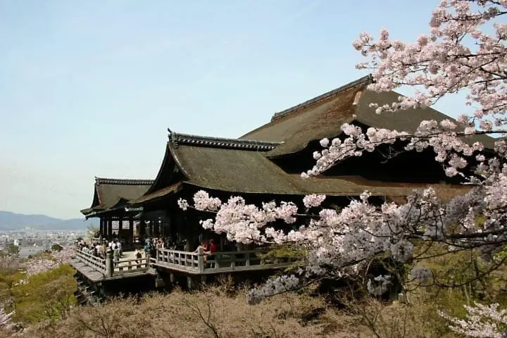
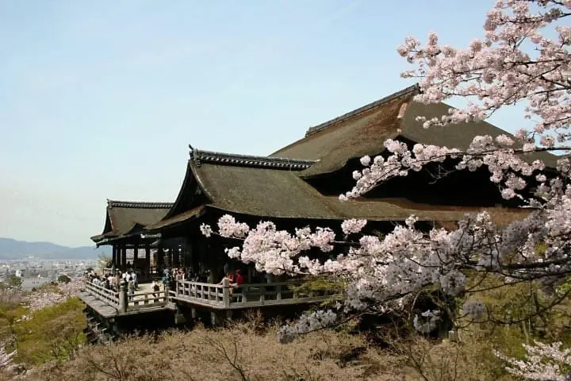
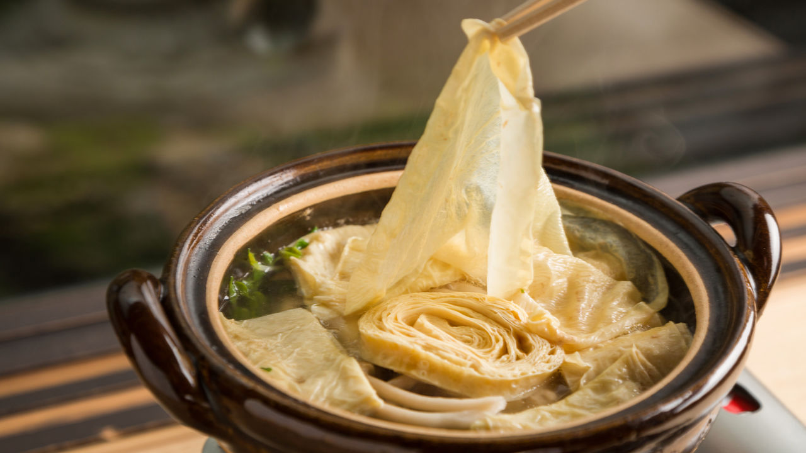
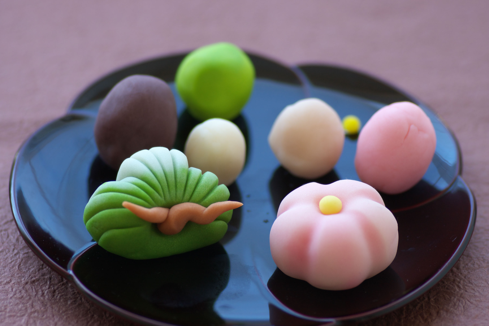
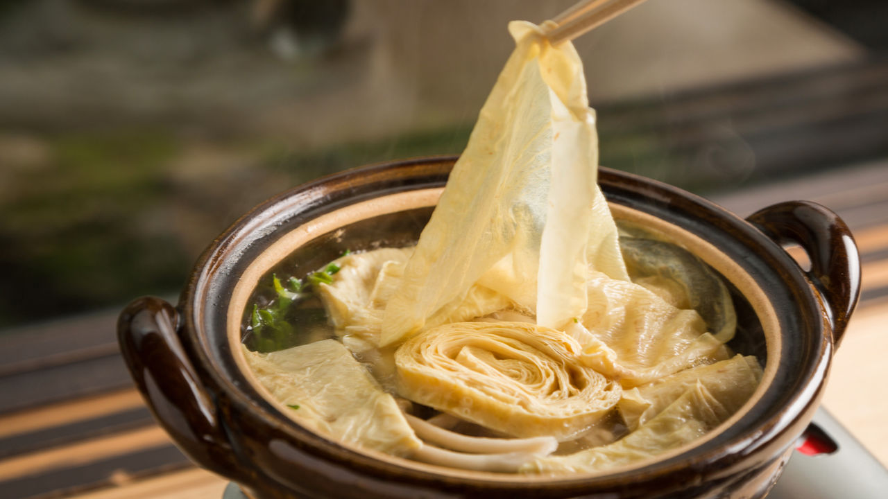
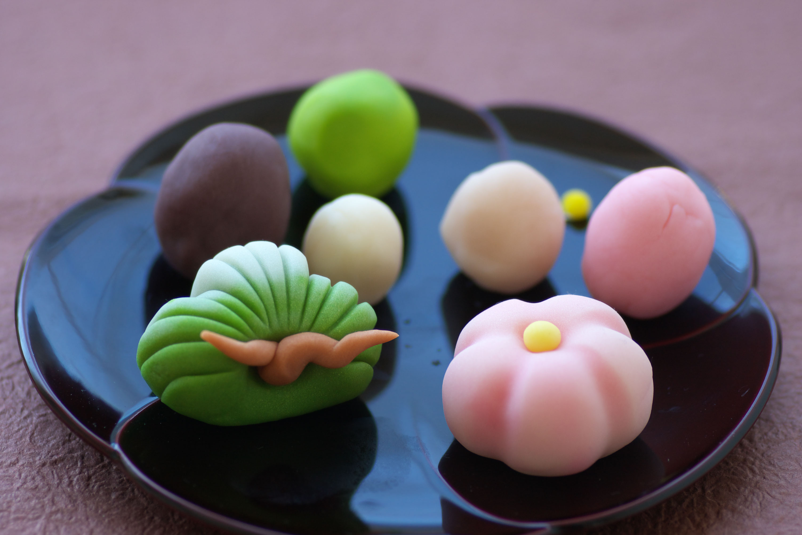

Comenzamos nuestro recorrido por Kyoto con una visita al icónico Templo Kinkaku-ji, también conocido como el Pabellón Dorado. Caminamos por el famoso distrito de Gion, conocido por sus casas de té y geishas, donde degustamos matcha y wagashi, dulces típicos de la región. Al día siguiente, visitamos el Bosque de Bambú de Arashiyama y el Templo Tenryu-ji, lleno de historia y belleza natural. Por la noche, disfrutamos de un ambiente tradicional en un ryokan, rodeados del espíritu cálido y acogedor de los habitantes de Kyoto.

Kyoto es el corazón espiritual y cultural de Japón. Nuestro recorrido te llevará por templos milenarios como el Kinkaku-ji (Pabellón Dorado), el impresionante Fushimi Inari Taisha con sus miles de puertas torii, y los tranquilos jardines del Templo Ginkaku-ji. Además, podrás disfrutar del encanto de los barrios tradicionales de Gion, donde aún se pueden ver geishas caminando por las calles empedradas al atardecer.
 

Kyoto ofrece una experiencia culinaria única, conocida por su delicadeza y respeto por los ingredientes de temporada. Durante nuestro viaje, degustamos el famoso Kaiseki Ryori (alta cocina japonesa), los Yuba (láminas de tofu), y los dulces tradicionales llamados Wagashi. Cada plato es una obra de arte, preparada con elegancia y precisión. Nuestros paquetes gastronómicos incluyen experiencias auténticas en restaurantes locales seleccionados.
 



Con la agencia Viajes Sakura, tu estadía en Kyoto será mucho más que un viaje: será una experiencia cultural transformadora. Nos encargamos de todos los detalles —desde la reserva del hospedaje hasta las actividades culturales— para que solo te enfoques en disfrutar. Kyoto te espera con sus templos, jardines y su atmósfera de serenidad que no encontrarás en ningún otro lugar del mundo.
Calcula el costo estimado de tu estadía en Kyoto según la temporada, número de personas y duración del viaje. ¡Aprovecha nuestras promociones especiales reservando con Viajes Sakura!